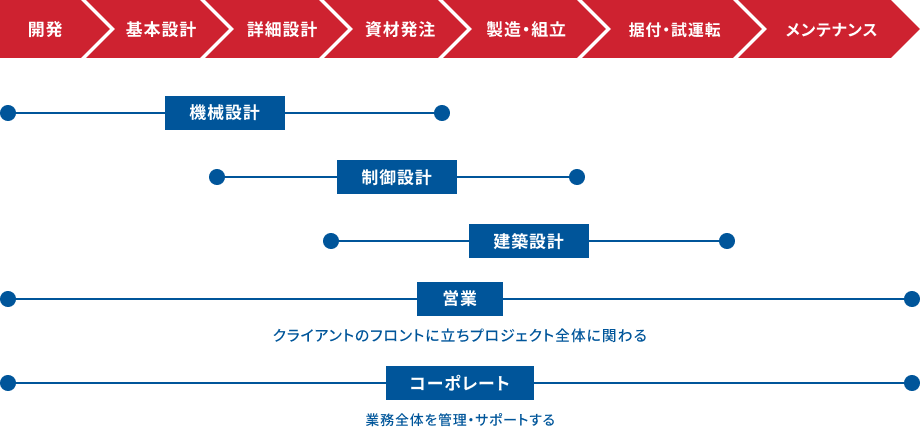

世界を変える力を創造する連携プレー
職種の垣根を超えて力を一つにする
あなたならどの職種で活躍しますか？

機械式駐車装置の基本仕様を決定する上流設計を担当します。顧客要望・敷地条件・法規制を総合的に分析し、装置構成・主要仕様・レイアウトを策定します。電気・機械各部門の詳細設計チームと連携しながらプロジェクト全体の方向性を定め、コストと性能のバランスを整える重要なポジションです。
機械式駐車装置の電気・制御系統の詳細設計を担当します。制御盤の回路設計・センサー選定・配線図の作成・安全回路の設計が主な業務です。基本設計で定められた仕様をもとに、装置が安全かつ正確に動作するための電気的な頭脳を設計し、機械系エンジニアと密に連携しながら製品の品質を支えます。
機械式駐車装置の機械系統の詳細設計を担当します。基本設計で定められた仕様をもとに各部品の形状・寸法・材質を決定し、製造・組立図面を作成します。強度計算や機構解析を通じて安全で信頼性の高い装置を設計し、製造部門と連携しながらモノづくりを一貫して支えます。
自走式駐車場の建築設計を担当します。敷地条件・都市計画法規・顧客の要件を踏まえ、構造計画・平面計画・立面計画を策定し、確認申請図書の作成から施工図の監修まで一貫して携わります。機械式駐車装置との複合案件では設計・施工管理チームと緊密に連携し、建物全体として安全かつ機能的な駐車場を実現します。
機械式駐車装置の設置工事における施工管理を担当します。工程管理・安全管理・品質管理・原価管理の4つが主な業務で、工事業者の指揮監督から設計・製造部門との連絡調整まで幅広く担います。現場ごとに異なる課題に対処しながら、高品質な施工を期限内に完遂する達成感が魅力の職種です。
機械式駐車装置の定期点検・修理・緊急対応を担当します。定期点検では各部品の動作確認・消耗品交換・安全装置の検査を実施し、故障発生時には迅速に現場へ駆けつけ復旧対応を行います。電気・機械・制御の複合知識を活かし、装置が安全に稼働し続けられるよう365日を通して支えるプロフェッショナルです。
受注した機械式駐車装置の製造計画を立案し、資材調達・部品製作・組立・出荷の各工程が滞りなく進むよう管理します。設計・調達・製造・工事の各部門と密に連携し、工程上の問題を早期に発見・解決することが役割です。受注ごとに異なる仕様と納期を管理し、会社全体の生産活動を支える縁の下の力持ちです。
機械式駐車装置の製造に必要な部品・材料の調達を担当します。サプライヤーとの価格交渉・発注・納期管理が主な業務です。機械・電気・建材など多岐にわたる部材を扱い、コストと品質のバランスを見極めながら発注先を選定します。新規サプライヤーの開拓や既存取引先との関係強化も重要なミッションです。
新設の機械式・自走式駐車場の受注活動を担当します。デベロッパー・ゼネコン・マンション管理会社などに対して、敷地条件に合わせた駐車場計画を提案し、見積もり・仕様調整・契約締結まで一貫して担います。技術的な知識を武器に顧客の課題を解決する、技術提案型の営業職です。
既設の機械式駐車装置を保有する顧客に対し、保守点検契約・部品交換・リニューアル改修などを提案します。顧客の装置状態を把握し、適切なタイミングで最適なメンテナンスプランを提案することが主な役割です。長期的な信頼関係を築きながら顧客の安全・安心な装置運用を支える、リレーション型の営業職です。
人事・総務・経理・財務・情報システムなど、会社経営を支えるバックオフィス業務全般を担当します。採用・労務・研修・制度設計といった人事領域から、財務管理・コンプライアンス・ITインフラ整備まで幅広い職種を含みます。技術系社員が力を発揮できる環境を整え、組織の土台を支えるやりがいのある仕事です。
既存の駐車場事業の枠を超えた新たなビジネスモデルの構築・推進を担います。EV充電インフラ・スマートパーキング・都市再開発との連携など、次世代の移動・空間サービスに関わる事業機会を探索・具現化します。市場調査・事業計画立案・社内外のステークホルダーとの推進まで一貫して担う、会社の未来を作るポジションです。
株式会社IHIパーキングスクエアへのエントリーはこちらから
エントリーする